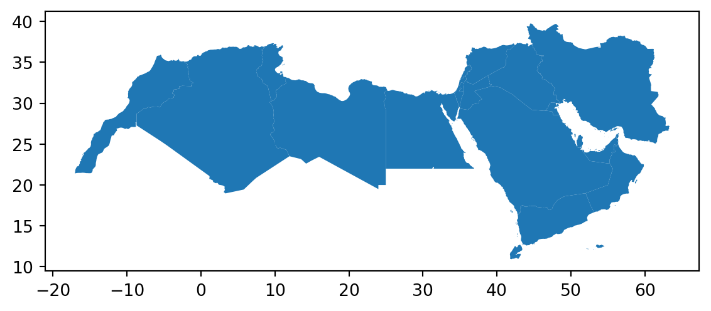
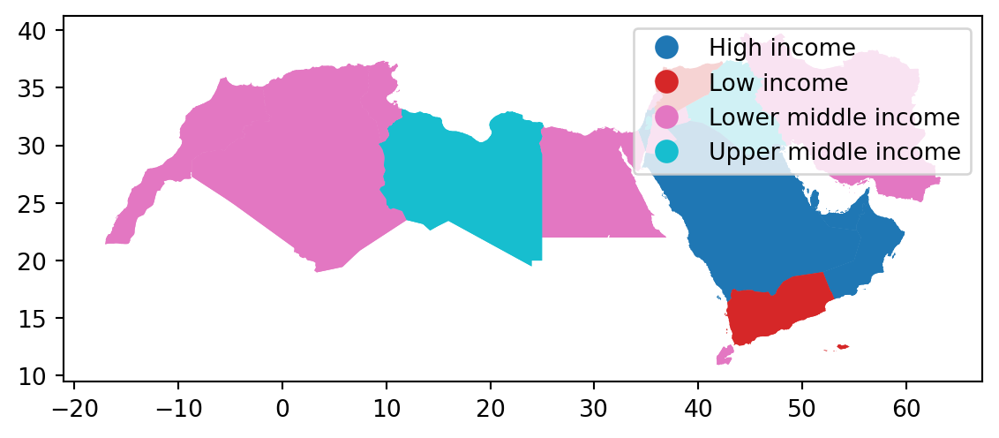

import matplotlib.pyplot as plt
import pandas as pd
import geopandas as gpd
import numpy as npLab in Python
Choropleths
In this session, we will build on all we have learnt so far about loading and manipulating (spatial) data and apply it to one of the most commonly used forms of spatial analysis: choropleths. Remember these are maps that display the spatial distribution of a variable encoded in a color scheme, also called palette. Although there are many ways in which you can convert the values of a variable into a specific color, we will focus in this context only on a handful of them, in particular:
Unique values
Equal interval
Quantiles
Fisher-Jenks
Installing Packages
Before all this mapping fun, let us get the importing of libraries and data loading out of the way:
Data
We will be using World Bank data for this section, looking at World Development Indicators and Education Statistics. We will be focusing on the Middle East and North Africa (MENA). We start by loading the relevant geometries:
# Load the GeoJSON file into a GeoDataFrame
mena_sf = gpd.read_file("data/MENA/MENA.geojson")
# Plot the geometry to make sure it looks correct
mena_sf.plot()
plt.show()
Don’t forget that before you go further, you want to check the CRS of the sf object as well as the dataframe.
Answer
# Check the CRS of the GeoDataFrame
print(mena_sf.crs)
# Display the first few rows of the GeoDataFrame
print(mena_sf.head())EPSG:4326
name formal_en_name code_a2 code_a3 \
0 United Arab Emirates United Arab Emirates AE ARE
1 Bahrain Kingdom of Bahrain BH BHR
2 Iran Islamic Republic of Iran IR IRN
3 Iraq Republic of Iraq IQ IRQ
4 Israel State of Israel IL ISR
geometry
0 MULTIPOLYGON (((53.86305 24.23469, 53.88860 24...
1 POLYGON ((50.55161 26.19424, 50.59474 26.16031...
2 MULTIPOLYGON (((55.05437 25.86461, 55.04648 25...
3 POLYGON ((42.89674 37.32491, 42.93705 37.32015...
4 POLYGON ((35.80363 33.24846, 35.80766 33.20172... We then load the csv with some World Development Indicators data.
world_dev = pd.read_csv("data/MENA/mena_worlddevelop.csv")And join the two objects using the relevant codes.
# Join check that the code you are joining the data on is the same.
# First check the GeoDataFrame
mena_sf.head()
# Then the DataFrame
world_dev.head()
## rename code columns so they match
mena_sf.rename(columns={'code_a3': 'Country Code'}, inplace=True)Merge GeoDataFrame and DataFrame
world_dev_gdf = mena_sf.merge(world_dev, on='Country Code')Now we are fully ready to map!
Unique values
A choropleth for categorical variables simply assigns a different color to every potential value in the series. Variables could be both nominal or ordinal.
Nominal: Nominal variables represent categories or labels without any inherent order or ranking. The categories are distinct and do not have a natural progression or hierarchy, such as “apple,” “banana,” and “orange” for fruit types.
Ordinal : Ordinal variables represent categories or labels with a meaningful order or ranking. The relative order or hierarchy among the categories is significant, indicating a clear progression from lower to higher values, such as “low,” “medium,” and “high” for satisfaction levels.
In Python, creating categorical choropleths is possible with one line of code.
world_dev_gdf.plot(
column="income_group", # Specifies the column "income_group" to color the plot based on categories
categorical=True, # Indicates that the "income_group" column is categorical (not continuous)
legend=True # Adds a legend to the plot, showing the different categories of "income_group"
)
# Show the plot
plt.show()
Important
These maps are all a bit rough a need quite a bit more work. They are just a starting point.
Equal Interval
If, instead of categorical variables, we want to display the geographical distribution of a continuous phenomenon, we need to select a way to encode each value into a color. One potential solution is applying what is usually called “equal intervals”. The intuition of this method is to split the range of the distribution, the difference between the minimum and maximum value, into equally large segments and to assign a different color to each of them according to a palette that reflects the fact that values are ordered.
Creating the choropleth is relatively straightforward in Python. For example, to create an equal interval of GDP per capita in 2015 (v_2015).
First we need to prepare the data, going back to our data wrangling.
# Step 1: Filter rows where Series.Name is "GDP per capita, PPP (current international $)"
filtered_data = world_dev_gdf[world_dev_gdf["Series Name"] == "GDP per capita, PPP (current international $)"]
# Step 2: Remove rows where 'v_2015' is missing (i.e., remove NA values)
filtered_data = filtered_data.dropna(subset=["v_2015"])
# Step 3
filtered_data["v_2015"] = pd.to_numeric(filtered_data["v_2015"], errors='coerce').round()
filtered_data = filtered_data.dropna(subset=["v_2015"]) # Remove rows with NaN in 'v_2015'
filtered_data["v_2015"] = filtered_data["v_2015"].astype(int)
# Step 4: Store the final result in world_dev_filtered
world_dev_filtered = filtered_dataAn equal Interval classification scheme produces a map of 5 classes where each class size is equal, so that each class has an equal range in between the low and high possible value. This allows for the legend to be easily understood by the viewer, since the legend entries are all the same size. However, this scheme does not show data which are skewed towards one side all that well.
#world_dev_filtered.plot(
# column="v_2015",
# scheme="equal_interval",
# k=4,
# cmap="YlGn",
# legend=True
#)
# Show the plot
#plt.show()Additional resources
- If you want to have a look at Choropleths in Python have a look at the chapter on choropleth mapping by Rey, Arribas-Bel and Wolf